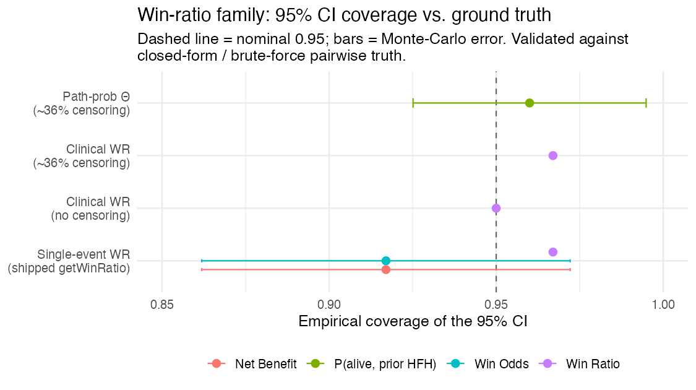
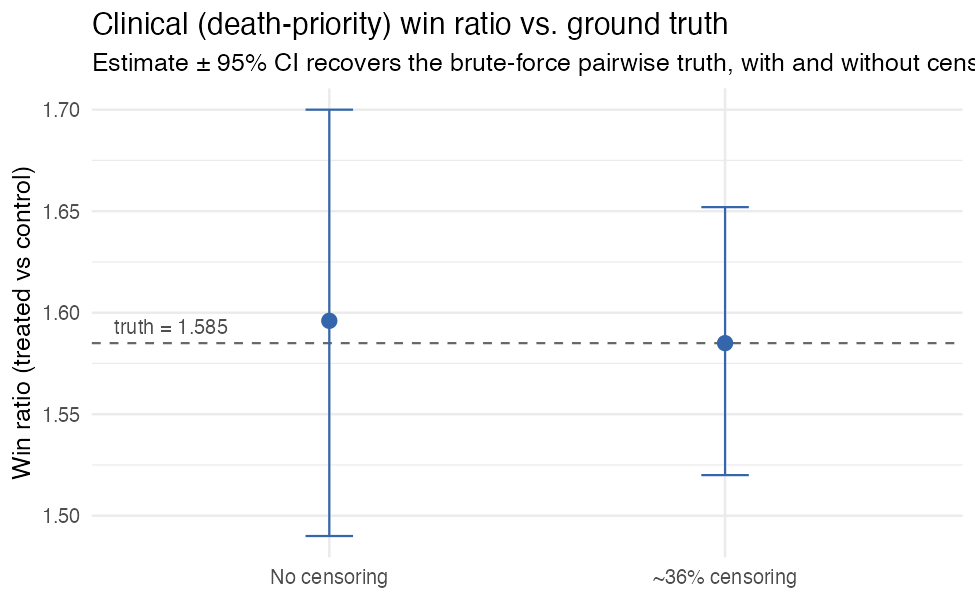
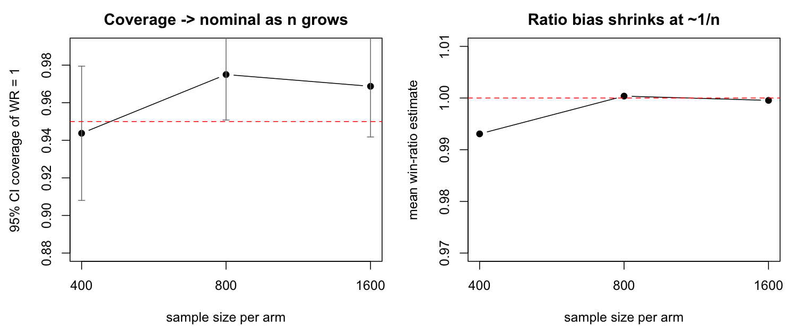

Win ratios for trialists: single, hierarchical, and clinical
Source:vignettes/win-ratio.Rmd
win-ratio.RmdThe win ratio compares two treatment arms by, in
effect, playing every treated patient against every control patient and
asking who does better. It is popular for composite and hierarchical
endpoints (e.g. cardiovascular death and heart-failure hospitalization)
and under non-proportional hazards, where the hazard ratio is hard to
interpret. concrete provides three versions, all built as
smooth functionals of the targeted counterfactual survival /
cumulative- incidence curves it already estimates — so unlike
the standard pairwise win ratio, they are covariate-adjusted,
doubly-robust, and censoring-corrected, with influence-function
confidence intervals.
This article explains the three, when to use each, and shows the simulation evidence that they are calibrated.
1. Single endpoint
For one time-to-event outcome, getWinRatio() reports the
restricted win ratio, win odds, and net benefit over
[0, Horizon]: a treated patient wins if the
control has the event first (within the horizon), loses if the
treated has it first, and ties otherwise.
library(concrete)
ConcreteEst <- doConcrete(formatArguments(
DataTable = trial, EventTime = "time", EventType = "event", Treatment = "arm",
ID = "id", Intervention = makeITT(), TargetTime = c(180, 365, 545, 730),
TargetEvent = 1, CVArg = list(V = 5)))
getWinRatio(ConcreteEst, Horizon = 730, Intervention = c(1, 2))
#> Win Ratio, Win Odds, Net Benefit, P(win), P(loss), P(tie) -- each with a CI2. Hierarchical (prioritized) endpoints
Give TargetEvent an ordered vector
(highest priority first) and the comparison becomes hierarchical (Pocock
/ Finkelstein–Schoenfeld): decide each pair on the top-priority event;
only if that ties, move to the next.
# event 1 (e.g. death) outranks event 2 (e.g. hospitalization)
getWinRatio(ConcreteEst, Horizon = 730, Intervention = c(1, 2), TargetEvent = c(1, 2))This version compares each patient’s first event,
treating the listed events as competing risks (the structure
concrete models). It is exact and fast, but note the
consequence: a patient hospitalized and then dying is
recorded by their first event (the hospitalization), so their later
death is not used. When death after a non-fatal event matters, use the
clinical win ratio below.
Directly targeted version: targetWinRatio()
getWinRatio() is a plug-in: it evaluates the
win functional on the pointwise-targeted risk curves, so the win
integral is a Riemann sum over your TargetTime grid and the
functional’s own estimating equation is not solved exactly.
targetWinRatio() closes both gaps — the same move
targetRMST() makes for the RMST. It fluctuates both
arms’ hazards jointly, with a clever covariate built from the
win-functional gradients over the full event-time grid,
until the win- and loss-probability estimating equations are solved:
targetWinRatio(ConcreteEst, Horizon = 730, Intervention = c(1, 2),
TargetEvent = c(1, 2))
#> Same six rows as getWinRatio(); attr(., "WRConverged") reports convergence.On a dense TargetTime grid the two agree closely. Prefer
targetWinRatio() when the target grid is sparse (the
plug-in’s win integral is then crude), and in smaller trials where the
plug-in’s win-odds / net-benefit intervals run slightly
anti-conservative. Standard errors honor Strata like
everything else.
3. Clinical (death-priority) hierarchical win ratio — the one you usually want (experimental)
clinicalWinRatio() targets the win ratio cardiologists
actually mean: compare on the most serious event first —
counting a higher-priority event even when it follows a lower-priority
one — then break ties on the next tier. Death counts even after
a hospitalization; a stroke counts even after a hospitalization. This is
the clinically intended hierarchy, and it is the win ratio the
first-event version (§1–2) cannot produce.
It handles an arbitrary ordered hierarchy of a terminal event (death) plus one or more non-fatal events. Internally it is a Markov multistate model whose states are the subsets of non-fatal events a subject has experienced; every transition (each non-fatal event out of each reachable state, and death out of every state) is a Super Learner, with doubly-robust, covariate-adjusted, censoring-corrected (IPCW) influence-function inference and optional cross-fitting. Pass the non-fatal event columns in priority order (highest first); a single column is the two-tier illness–death case.
# Two-tier (death > hospitalization):
clinicalWinRatio(trial, arm = "arm", illness.time = "t_hosp",
terminal.time = "t_term", terminal.status = "died",
covariates = c("age", "sex"), horizon = 1460)
# Three-tier hierarchy (death > stroke > hospitalization):
clinicalWinRatio(trial, arm = "arm", illness.time = c("t_stroke", "t_hosp"),
terminal.time = "t_term", terminal.status = "died",
covariates = c("age", "sex"), horizon = 1460)
#> Win Ratio / Win Odds / Net Benefit / P(win,loss,tie), each with an IF CICan you trust it? Simulation evidence
Every version is validated against ground truth — closed-form path probabilities and a brute-force pairwise win ratio computed on full simulated histories (which counts death-after-non-fatal correctly). Across the win-ratio family, the 95% influence-function confidence intervals cover at the nominal rate:

And the clinical (death-priority) win ratio recovers the brute-force pairwise truth essentially exactly, with and without censoring:

(Reproduce with scripts/make-winratio-coverage.R,
scripts/make-clinical-wr-censoring-validation.R, and the
other scripts/make-clinical-wr-*.R.)
Plug-in vs directly targeted
targetWinRatio() was validated against a brute-force
pairwise ground truth (4 million simulated pairs) alongside the plug-in,
120 replicates per cell at n = 500 per arm:
| Cell | Estimator | WR bias | WR coverage |
|---|---|---|---|
| K = 2 hierarchy, sparse 2-time target grid (truth WR 1.47) | plug-in | +0.078 | 0.933 |
| direct | +0.015 | 0.958 | |
| K = 1, dense grid (truth WR 1.63) | plug-in | +0.042 | 0.967 |
| direct | +0.009 | 0.975 |
Direct targeting converged in 100% of replicates in both cells, and
the net benefit was unbiased and nominal for both estimators throughout.
The pattern is the same as for the RMST: the plug-in is fine on dense
grids; the direct method removes the target-grid sensitivity and cuts
the residual win-ratio bias about five-fold either way. (Reproduce with
scripts/dev-targetwr-validation.R.)
A note on small trials
The win ratio is a ratio, and ratios are mildly
biased and anti-conservative in small samples — this is a well-known
finite-sample property of the win ratio (it affects the unadjusted
Pocock win ratio too), not something specific to this estimator. In a
null simulation (both arms identical, true win ratio 1), the point
estimate is biased downward by about 1% at ~400/arm, with 95% Wald
coverage near 0.93–0.94 and type-I error near 0.06–0.07. The effect
shrinks at the usual 1/n rate: by ~800/arm the bias is
negligible and coverage is nominal (0.95–0.97).

Importantly, this is a property of the win-ratio functional,
not of the machine-learning nuisances: turning on
cross-fitting (n.folds = 5, the default)
does not change it. Cross-fitting is still worth keeping on — it gives
honest inference when SL.library contains flexible learners
that could over-fit in sample — but for a small trial, read the interval
as mildly optimistic, or use a resampling interval. (Reproduce with
scripts/make-clinical-wr-smalln.R.)
Which one should I use?
| Situation | Use |
|---|---|
| Prioritized clinical hierarchy (death > … > non-fatal events) — most trials | clinicalWinRatio() |
| A higher-priority event can follow a lower-priority one (death after a hospitalization; stroke after a hospitalization) | clinicalWinRatio() |
| One time-to-event endpoint |
getWinRatio() (single TargetEvent) |
| Prioritized endpoints where first events are genuinely mutually exclusive |
getWinRatio() (ordered TargetEvent) |
Start with clinicalWinRatio() — it is
the clinically correct hierarchy and what most composite/win-ratio
endpoints (common in device and oncology trials, or wherever a
hierarchical composite endpoint is used) actually mean. Reach for the
first-event getWinRatio() only when a higher-priority event
can never follow a lower-priority one. In all cases a win ratio above 1
(and net benefit above 0) favors the active arm, and the win ratio’s CI
crossing 1 is the test of no difference.
Caveats
-
clinicalWinRatio()is experimental. It uses its own per-subject event columns (not yet the [formatArguments()] pipeline), and assumes non-recurrent events, conditionally-independent censoring (CAR), and a Markov multistate model. The estimand and its influence-function inference are validated against brute-force ground truth for hierarchies up to four time-to-event tiers. Recurrent-event tiers (repeated hospitalizations) and continuous/ordinal tiers (e.g. KCCQ) are not yet supported. - Use a reasonably dense time grid (
n.grid); like RMST, the path-probability integrals carry a small grid-discretization bias that shrinks with the grid. - In small trials the win ratio is mildly anti-conservative (see A note on small trials above) — a finite-sample property of the win ratio that is nominal by ~1000–2000/arm and is not fixed by cross-fitting.
- For the single/hierarchical versions, use a reasonably dense
TargetTimegrid up to the horizon. ```